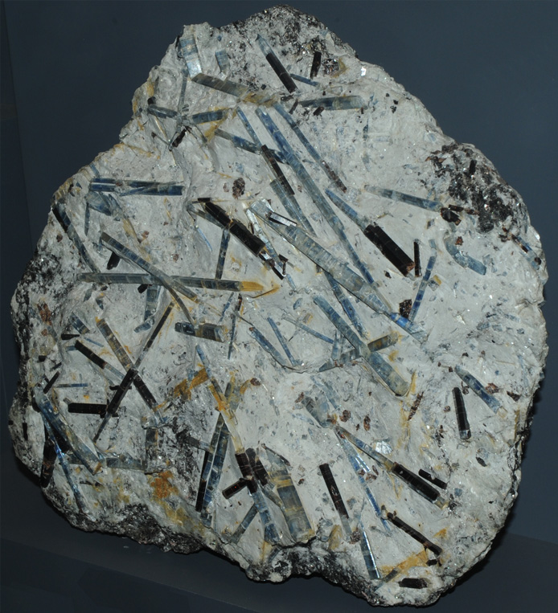
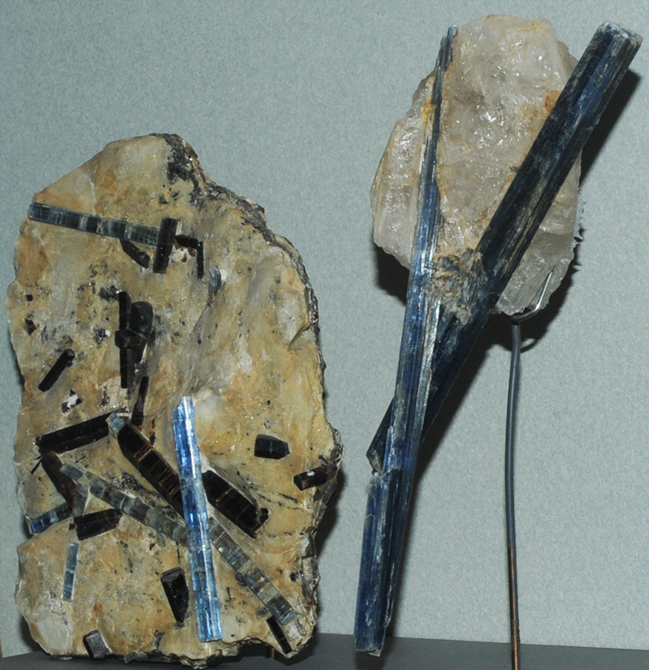
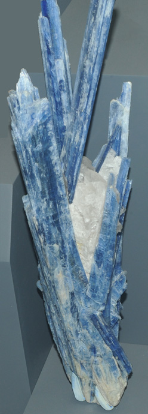
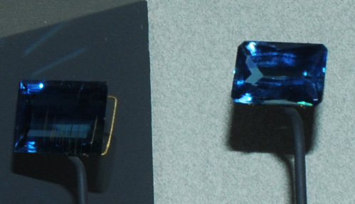
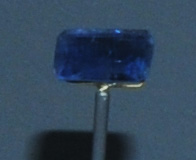

Kyanite
|

| Al2SiO5
Kyanite is a silicate mineral of aluminum with composition Al2SiO5 . This sample is about 25x25 cm and is from Monte Campione, Uri, Switzerland. It is described as kyanite (the slender crystals) with staurolite (the background material). The chemical compostion is the same as the minerals sillimanite and andalusite. These samples are on display at the Smithsonian Museum of Natural History.
|

At left above is a kyanite sample from Monte Campione, Uri, Switzerland. It is about 15 x 25 cm. At right above are long slender blue crystals of kyanite on the order of 25 to 30 cm long. They are from Minas Gerais, Brazil.
|  |
The sample at left is kyanite with quartz and it is from Sao Jose da Safira, Minas Gerais, Brazil. It is about 15 x 40 cm.

This pair of kyanite gems is from Minas Gerais, Brazil. The right one is 28.4 carats. The size of the left one was not recorded.

This kyanite gem is 3.7 carats and is from Spruce Pine, North Carolina.
|
|
Index |